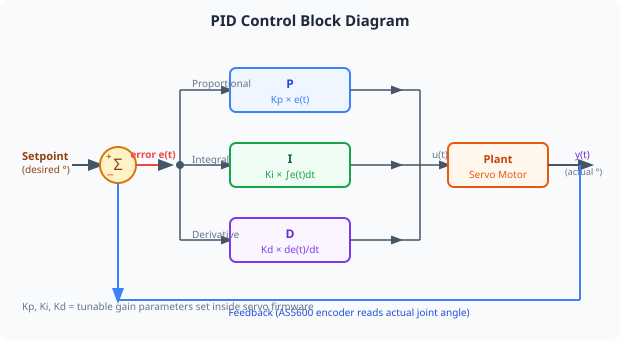
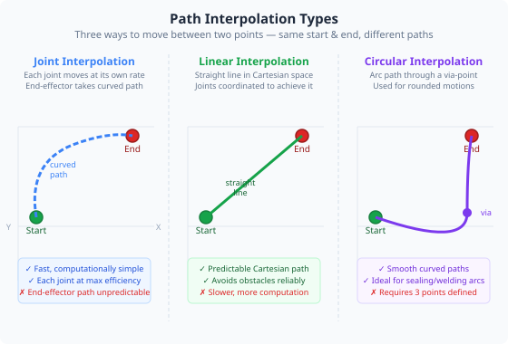
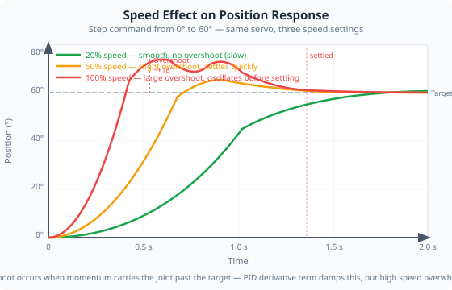

Duration: 3–4 hours · Prerequisites: Modules 3, 5, 7

In Module 3 you learned that the servos use PID control internally. Here we examine what each term actually does and how tuning PID gains affects system behaviour.
Output is proportional to current error. Large error → large correction. Too high: oscillation. Too low: slow response and steady-state offset.
Accumulates past error over time. Eliminates the steady-state offset that P alone cannot correct. Too high: slow oscillation and windup.
Reacts to the rate of change of error. Damps oscillation and improves settling. Too high: amplifies sensor noise, jerky motion.
Without PID, if you command a servo to move to 90° it would apply full motor power until it gets there — then overshoot past 90°, reverse, overshoot again, and oscillate indefinitely. The PID controller continuously reduces power as the joint approaches the target, stopping it smoothly at the correct angle.

Moving from Position A to Position B in joint space is simple: command each joint to its new angle. But this produces a curved path in Cartesian space — the end effector does not move in a straight line.
For applications requiring a straight tool path (e.g. welding or cutting), linear interpolation (LINTERP) is needed. The controller splits the move into many small steps, recalculating joint angles at each step so the end effector moves in a straight line.
F1137 is approximately 100°/sec. When comparing speeds across the two languages, always convert to a common unit first.

Set the arm to a starting position (e.g. all joints at 0°). In Pendant Control, set speed to 10%. Command Joint 2 to move from 0° to 60°. Watch the 3D view and observe how smoothly it moves. Note whether there is any overshoot past 60°.
Return to 0°. Repeat the same 0°→60° move at 50% speed. Then again at 100% speed. For each, note whether the joint overshoots its target and how long it takes to settle.
In Joint Control, watch the live angle reading as a joint moves. At 100% speed, does the angle reading overshoot and then come back? Record what you observe.
Now check the update interval in Settings. Halve the update interval (i.e. poll twice as often). Repeat the 100% speed test — does the feedback look different? Record your observation.
Open the Settings tab and find Movement Mode. Switch between PTP (Point-to-Point) and Linear Cartesian. In PTP mode, all joints move to their targets simultaneously, producing a curved path through Cartesian space. In Linear Cartesian mode, the server computes intermediate waypoints so the tool tip moves in a straight line.
Command the same two-pose move (e.g. Home → a position with the arm extended) in both PTP and Linear Cartesian mode. Enable the End-Effector Trace overlay in 3D Visualisation to see the path difference. In which mode is the path straighter? Note the speed difference — Linear Cartesian is typically slower because of the additional computation.
PID control is everywhere: thermostats, aircraft autopilots, cruise control, hard drive heads, injection moulding machines. Understanding what each term does and how to tune it is one of the most practically useful skills in control engineering. A poorly tuned PID loop wastes energy, damages hardware, and produces inconsistent results. A well-tuned loop is nearly invisible — it just works.
Path interpolation matters the moment you need the robot to do something more precise than "move from here to there." In welding, the difference between joint interpolation and linear interpolation is the difference between a good weld and a scrapped part. The fact that the communication stack supports this — all the way down to the Raspberry Pi calculating intermediate points and sending them over the serial bus — reflects how industrial robot control systems work at a fundamental level.
1. A joint oscillates around its target position and never fully settles. Which PID gain adjustment is most likely to fix this?
2. A robot is cutting a straight slot in a flat sheet. Which interpolation mode should be used?
3. The I (integral) term in a PID controller is specifically needed to eliminate which of these problems?